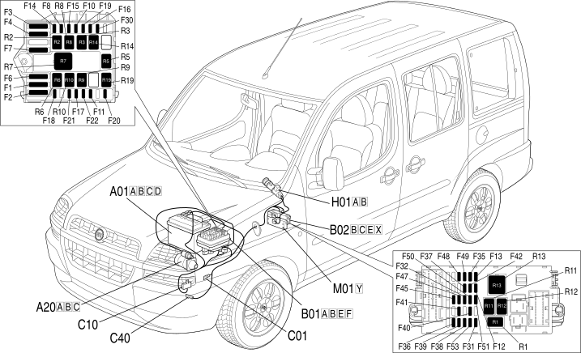

E1010 SUPPLY - LOCATION OF COMPONENTS
- Path
- Electrical equipment > 1 ELECTRICAL FUNCTIONS > E10 POWER SUPPLY AND EARTHS > E1010 POWER SUPPLY > E1010 SUPPLY - LOCATION OF COMPONENTS
- Kind
- topic
- Applies to
- engines: 1.2 8v, 1.6 16v, 1.3 JTD 16V, 1.9 JTD 8V, 1.9 DIESEL; production: da 12/03
- Interactive page
- https://sloeber94.github.io/elrnDB-fDbl/en/#/223001356
Applies to: engines: 1.2 8v, 1.6 16v, 1.3 JTD 16V, 1.9 JTD 8V, 1.9 DIESEL; production: da 12/03
Location of components

COMPONENTS
Component code | Name | Assembly reference |
|---|---|---|
Battery | ||
Starter' motor | ||
Starter' motor | ||
Engine compartment junction unit | - | |
Engine compartment junction unit | ||
Engine compartment junction unit | ||
Junction unit under dashboard | ||
Battery earth | - | |
Battery earth | ||
Front left earth | - | |
Facia earth, driver's side | - | |
Earth on engine | - | |
Ignition switch |
Topics linked from this page (15)
- 1004B POWER UNIT ASSEMBLY
- 1060G pressure pump electric control
- 5505A multi-function components
- 5520A ignition switch
- 5520B starter motor and components
- 5530B battery and leads
- A001 BATTERY
- A020 STARTER MOTOR
- B001 JUNCTION UNIT
- B002 JUNCTION UNIT UNDER DASHBOARD
- C1 BATTERY EARTH ( ENGINE )
- C010 LEFT FRONT EARTH
- C015 DASHBOARD EARTH, DRIVER'S SIDE
- C040 ENGINE EARTH
- H001 IGNITION SWITCH